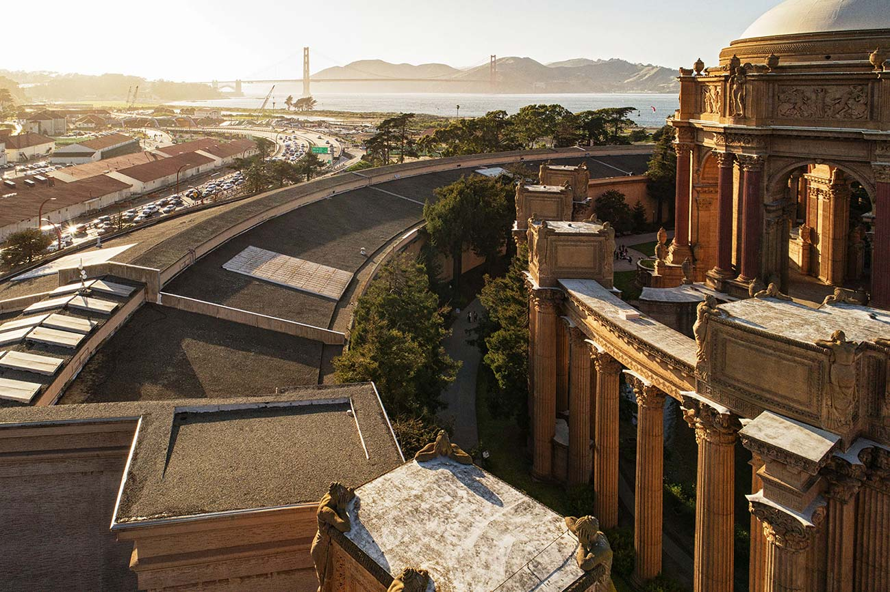

Venue



The Palace of Fine Arts Theatre is located in San Francisco at 3301 Lyon Street, adjacent to the Presidio.
For directions and information on the venue, visit http://palaceoffinearts.org/contact/
Nearby Hotels
- Courtyard Marriott San Francisco Fisherman’s Wharf
- Travelodge at the Presidio
- Inn at Golden Gate
- Knights Inn San Francisco
- La Luna Inn
- Marina Hotel
- Inn at the Presidio
Nearby Hotels
- The Presidio
- The Golden Gate Bridge
- Golden Gate Park
- Fisherman’s Wharf
- Ghiradelli Square